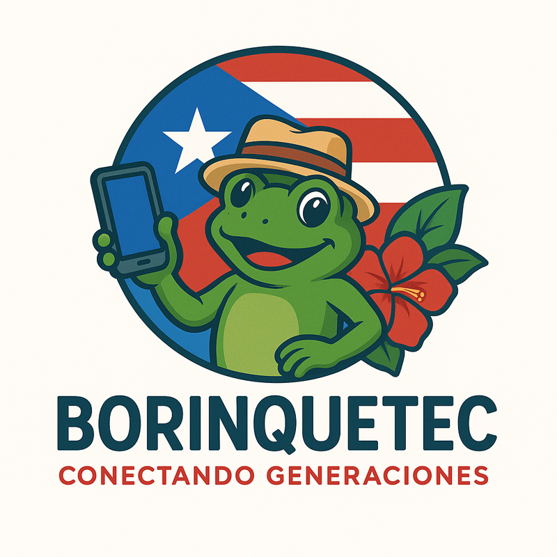
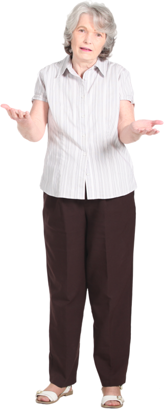

Tutorías personalizadas
Orientación individual según las necesidades y el ritmo de cada participante.

BorinqueTecCONECTANDO GENERACIONES
Emprendimiento social de integración tecnológica.
Acompañamiento digital cercano, práctico y al ritmo de nuestra gente de oro.
Propuesta de valor
Quiénes somos
Nos enfocamos en reducir la brecha digital y fortalecer las destrezas tecnológicas de las personas mayores.
Nuestros servicios
Orientación individual según las necesidades y el ritmo de cada participante.
Apoyo cercano para ganar confianza al utilizar herramientas digitales.
Actividades para practicar habilidades tecnológicas en un entorno accesible.
Aprende a cualquier edad
Diferenciación
Nos diferenciamos: Enseñanza paciente, práctica y adaptada al ritmo de cada persona. Un acompañamiento cercano y un entorno sin presión.
Mayor debilidad: Como negocio nuevo, necesitamos darnos a conocer y construir confianza en la comunidad.
Fortaleza: Ofrecer servicios especializados que promuevan autonomía e inclusión digital.
Mercadeo
✓ Anuncios, eventos, ofertas y testimonios.
2-3 publicaciones por semana✓ Promociones, actividades y experiencias de clientes.
2-3 publicaciones por semana✓ Consultas, citas, recordatorios e información.
Comunicación directa con los clientes.✓ Alianzas con centros de envejecientes, municipios y planes médicos.
Actividades periódicas.Objetivo del primer año: Dar a conocer BorinqueTec y atraer clientes potenciales interesados en nuestros servicios.
Propuesta de financiamiento
| Fuentes de fondos | |
|---|---|
| Préstamos | $240,000 |
| Aportación propia | $5,000 |
| Total | $245,000 |
| Uso de fondos | |
| Gastos | $5,250 |
| Activos | $231,600 |
| Total | $236,850 |
| Balance de fondos de inicio | $8,150 |
Finanzas
Ingresos mensuales proyectados
Las barras de los tres años usan la misma escala para poder compararlas.
Sección de preguntas

Cierre
Graciaspor su tiempo
«La tecnología nos conecta. El acompañamiento de BorinqueTec hace la diferencia.»